Ecos de la Tierra
Sistema de diseño «Tierra Viva», paquete sin conexión (2026-10-31). Abre este archivo en el navegador; todo funciona sin internet.
Léeme
> **Tierra Viva.** Solmira está enferma, pero nunca gris: el daño tiene su propio color —ceniza, crudo, plástico, óxido— y la purificación devuelve el del bosque, el río y las flores. El jugador ve el mundo sanar. *Ecos de la Tierra* es un RPG de acción en pixel art con exploración cenital: se pelea en el mismo mapa, en tiempo real. Este sistema fija cómo se ve todo: mundo, personajes, monstruos e interfaz. Sus referencias son **The Legend of Zelda: The Minish Cap** y **Link's Awakening** (mundo legible, copas de árbol en racimos, caminos con borde de hierba), **CrossCode** y **Moonlighter** (personajes con volumen y caminata viva), y **Pokémon Negro/Blanco, Negro 2/Blanco 2 y HeartGold/SoulSilver** (caja de diálogo de papel, cartel de lugar, color de los pueblos). El combate **no** es por turnos ni en pantalla aparte: es de acción en el mapa, como Minish Cap. ## Retícula - Lienzo lógico de **640×360**, escalado solo por enteros (2× = 1280×720, 3× = 1920×1080), filtro *Nearest*. - Terreno en losetas de **16 px** (`tile`), escrito casilla a casilla. Cada material se vuelve una máscara de píxeles con esquinas redondeadas (camino radio ~6, agua curvas amplias): bordes rectos limpios y curvas suaves, nunca escalones ni ruido. Cada loseta depende solo de sus 8 vecinas, así que se traslada tal cual a un autotile de Godot. - Personajes en lienzo de **48 px** (`character`), unos 46 px de alto, en 8 direcciones. Monstruos de combate en **128 px** (`monster`). - Un píxel de arte = un píxel de pantalla, sin excepciones. Los monstruos de zona (128 px) son más grandes que el héroe a propósito: se leen como jefes de la zona. ## Color - Paleta por **rampas**, de oscuro a claro (`grass-1` … `grass-7`). Las sombras viran a azul o violeta y las luces a amarillo: nunca se oscurece añadiendo negro. - Todo sprite se contornea con **contorno selectivo**: el borde toma el tono más oscuro de su propio material, no un negro plano. El contorno exterior de la interfaz es `ink-1`. - **Mundo sano**: `grass`, `leaf`, `dirt`, `sand`, `water`, `wood`, `roofr`, `roofb`, `wall`, `flower`. - **Mundo enfermo**, uno por región, con su propio color: incendio `ash` + `fire` (Bosque de las Cenizas), crudo `oil` + `sheen` (Cuenca de Alquitrán), residuos `plastic` (Costa Quebrada), agotamiento `drygrass` + `sludge` (Llanura Marchita), hollín sobre `ice` (Cumbre Menguante), `gold` + `smog` (Cripta de la Avaricia). - **`eco`** es el acento de la purificación: la chapa PURIFICADO, el mando ECO, la barra de energía y la luz de las habilidades. No se usa como decorado. - Las barras de vida: `hp-high` (verde), `hp-mid` (oro), `hp-low` (rojo), con la cifra al lado en la tarjeta del héroe. ## Tipografía - Una familia, **Brote**: pixel proporcional, mayúsculas de 7 px, minúsculas de 5, descendentes de 2, tildes, ñ, `¿¡«»` y los símbolos ▶ ▼ ✓ ✖ ♥ ★. - `texto` (11 px) para todo; `titular` (22 px) solo para títulos y desenlaces. Sin tamaños intermedios. - Sobre papel, el texto va en `text-on-paper` con sombra de 1 px `text-shadow-paper` abajo a la derecha, como en Pokémon. Sobre pizarra, `text-on-slate` con sombra `ui-1`. ## Interfaz - **Caja de diálogo** (`DialogBox`): papel `paper` con marco de madera de 2 px (`paper-edge`), esquina 3, hoja `eco` en la esquina superior izquierda, chapa con el nombre de quien habla y retrato opcional. `▼` cuando hay más texto. - **HUD de acción** (`ActionHUD`), siempre a la vista y sin pausar el juego: - *Tarjeta del héroe* arriba a la izquierda: retrato, nombre, la causa que sabe atajar (chapa de tipo), PV y energía. - *Relevo* debajo: los otros cuatro con su PV y un punto del color de su causa. **Q / E** cambian de héroe al momento. - *Bolsa* abajo a la izquierda: cuatro huecos con icono, cantidad y tecla **1–4**. Usar un objeto no abre ningún menú. - *Mandos* abajo a la derecha, en rombo y de color fijo: **Z** atacar (`rust`), **X** esquivar (`roofb`), **C** habilidad eco con su coste (`eco`), **V** objeto elegido (`gold`). - *Placa flotante* sobre el monstruo: nombre, chapa de tipo, SE REHACE / PURIFICADO y barra de PV. - *Aviso* en papel abajo en el centro: la regla dicha con el hecho («La llama se rehace. Su causa es FUEGO»). - Pizarra `slate` con contorno `slate-edge` para todo el HUD; papel solo para lo que se lee como frase. - **Cartel de lugar** (`LocationSign`): tabla de madera con clavos, el nombre de la zona y, debajo, su estado. - **Chapas** (`TypeBadge`): tipo de daño en su color (FUEGO, PETRÓLEO, PLÁSTICO, MONOCULTIVO, DESHIELO, AVARICIA) y estado (CORRUPTO / PURIFICADO). Texto blanco o claro, siempre ≥ 4,5:1. - Esquinas recortadas en escalera (`corner-1/2/3`), nunca curvas suavizadas. Sin degradados ni sombras difusas en la interfaz. ## Mundo - **Hierba**: textura propia de 32×32 con matas en V regulares pero no mecánicas, más matas sueltas y flores. Nada de manchas de color: la variedad la ponen los objetos. - **Caminos**: tierra con borde oscuro de 1 px, sombra de la hierba en el borde norte y briznas que lo pisan. Curvas amplias en los quiebros. - **Agua hundida**: la profundidad sale de la distancia a la orilla (bajío claro, medio, fondo oscuro, transiciones tramadas); en la orilla norte se ve el talud de tierra; destellos solo en agua abierta; nenúfares, juncos y piedras. - **Desniveles**: mesetas con cara de roca de una loseta hecha de bloques (no ladrillos), flecos de hierba colgando, labio de luz arriba, sombra al pie y escaleras de piedra. Donde un río cruza una cara, cascada. - **Objetos**: árboles en racimos con sombra, arbustos con los mismos racimos, tocones, troncos caídos, carteles, vallas, setas. - **Regla de colocación**: el pie de un árbol solo va sobre hierba libre y su copa no tapa más del 8 % de agua o camino. La escena no se genera si alguno lo incumple, y la posición vale a la vez para el árbol sano y el quemado. - Los bosques se cierran con filas de árboles solapados (muro de árboles), como en Pokémon y Minish Cap. - La hierba alta va en matas densas con forma (no rectángulos), cortables. - Lo enfermo y lo sano son el mismo mapa con otra paleta y otros objetos: el árbol quemado vuelve a tener copa, el agua turbia vuelve a ser azul, la hierba seca vuelve a ser verde y aparecen flores y fauna. - En lo enfermo **todo** se asienta en el mismo daño: los árboles quemados llevan cerco de ceniza y sombra, la madera de tocones y troncos está carbonizada, y casas y vallas se apagan hacia el gris ceniza. Nada conserva el color sano encima de un suelo quemado. ## Personajes y monstruos - Personajes de 48 px, vista cenital baja, contorno selectivo, 8 rotaciones y caminata de 4 cuadros a `dur-walk-frame` (200 ms por cuadro). - Cada monstruo tiene **dos formas** que comparten silueta de base: la corrupta (agresiva, con el material del daño) y la purificada (amable, con el material sano). Purificar cambia forma, paleta y expresión a la vez. - En el mapa, el monstruo de zona patrulla y se enfrenta en el sitio. Golpearlo sin la causa correcta lo hace rehacerse; la habilidad eco del héroe adecuado lo purifica. ## Voz - Todo en español, frases cortas, sin marketing. Menús y mandos en MAYÚSCULAS; diálogos en tipo oración. - La pantalla enseña el hecho, no da consejos: «La Llama se regeneró: la causa sigue activa.» ## Movimiento - Caminata de 4 cuadros; texto que se escribe letra a letra (`dur-text-char`), Enter lo completa; barras de PV que bajan en `dur-hp`. - La purificación (`dur-purify`) es el momento grande: el monstruo cambia de forma y el color vuelve al mapa en una ola circular tramada (Bayer 4×4) que sale de él. - Golpe: tajo en media luna de oro a blanco y chispa; cifras a doble tamaño; `~` delante si el monstruo se lo quita de encima. - Con movimiento reducido, todo salta al estado final. ## Activos - Personajes y monstruos generados con PixelLab a partir de descripciones de este sistema; terreno, interfaz y fuente hechos a mano en código. - Los grupos de Activos muestran copias ampliadas por entero (3× o 2×) para verlas nítidas; los originales están a 1× en el proyecto.
Color
Tipografía: Brote
Archivos: project/fonts/Brote.woff2 (web) y BMFont en el repo.
Espaciado
| space-2 | 2px | Anillo de selección; separación texto-sombra. |
| space-4 | 4px | Relleno de chapas; hueco entre mandos. |
| space-6 | 6px | Relleno lateral de placas y filas. |
| space-8 | 8px | Margen de pantalla para placas. |
| space-12 | 12px | Margen de cajas de diálogo. |
| space-16 | 16px | Rejilla del mundo; relleno de diálogo. |
| space-24 | 24px | Separación entre bloques de interfaz. |
Esquinas
| corner-1 | 1px | Chapas de tipo y estado: esquina recortada de 1 píxel. |
| corner-2 | 2px | Filas del grupo, carteles y retratos: escalón 2-1. |
| corner-3 | 3px | Cajas de diálogo, placas y mandos: escalón 3-1-1. |
Bordes
| outline | 1px | Contorno exterior de toda pieza en ink-1. |
| paper-frame | 2px | Marco de madera de la caja de papel. |
| selection | 2px | Anillo blanco del mando elegido. |
Rejilla
| screen-width | 640px | Lienzo lógico; escala entera 2× (1280×720) y 3× (1920×1080). |
| screen-height | 360px | Alto del lienzo lógico. |
| tile | 16px | Rejilla del terreno; transiciones en rejilla dual de esquinas. |
| character | 48px | Lienzo de personaje (unos 46 px de alto), 8 direcciones. |
| monster | 128px | Lienzo de monstruo de combate, 1×. |
| battle-back | 96px | Personaje de espaldas en combate: el de 48 px escalado 2×, como los sprites traseros de NB. |
Duraciones
| dur-walk-frame | 200ms | Cada cuadro de la caminata de 4 cuadros. |
| dur-cursor | 80ms | Salto del anillo de selección. |
| dur-text-char | 25ms | Escritura del diálogo, letra a letra; Enter completa. |
| dur-hp | 400ms | La barra de PV baja hacia su valor. |
| dur-sign | 2000ms | Cartel de lugar en pantalla al entrar a una zona. |
| dur-purify | 1200ms | Transformación del monstruo y ola de color que vuelve al mapa. |
ActionHUD
Tarjeta del héroe, relevo, bolsa, mandos y placa flotante
Notas de uso
# ActionHUD Piezas del HUD del combate de acción. Todas en pizarra `slate` con contorno `ink-1` y esquina 2–3, menos el aviso, que va en papel. ## Piezas - **Tarjeta del héroe** (168×40): retrato 32 px, nombre en `gold-5`, chapa de la causa que ataja, PV con cifra y energía `eco`. - **Relevo**: retratos de 22 px de los otros cuatro, barra de PV debajo y un punto con el color de su causa. Teclas **Q** y **E** a los lados. - **Bolsa** (quickbar): cuatro huecos de 26 px con icono de 12 px, cantidad y tecla **1–4**. El elegido lleva borde `gold-4`. - **Mandos** en rombo, de color fijo: atacar `rust` (**Z**), esquivar `roofb` (**X**), eco `eco` con coste (**C**), objeto `gold` (**V**). Sin energía suficiente, el botón eco se apaga a `ui-2` pero sigue enseñando el coste. - **Placa flotante** sobre el monstruo: nombre, chapa de tipo, SE REHACE (`rust`) o PURIFICADO (`eco`) y barra de PV. ## Reglas - El HUD nunca tapa el centro de la pantalla: ocupa las esquinas y una franja baja. - Las teclas siempre se ven al lado de lo que hacen.
BattleScreen
Combate de acción en el mapa: golpe sin la causa y purificación con el héroe correcto
Notas de uso
# BattleScreen Combate de acción en el mismo mapa, a la manera de Minish Cap y Link's Awakening. No hay pantalla aparte ni turnos. ## Cómo se juega - Te mueves y atacas en tiempo real con un héroe. **Q / E** cambian de héroe al instante; cada uno sabe atajar una causa (Bruma: FUEGO, Coral: PETRÓLEO, Nix: PLÁSTICO, Suri: MONOCULTIVO, Ilan: DESHIELO). - Golpear a un monstruo con la causa activa lo deja en SE REHACE: la cifra sale con `~` y el aviso dice el hecho y la salida. - La habilidad eco (**C**) del héroe adecuado lo purifica: cambia de forma, su placa pasa a PURIFICADO y el color sano vuelve al mapa en una ola circular tramada. - La bolsa está siempre a la vista (**1–4**, **V** usa el elegido): no hay menú que pare la acción. ## Composición (640×360) - `ActionHUD` en las cuatro esquinas: héroe y relevo arriba a la izquierda, cartel de lugar arriba a la derecha, bolsa abajo a la izquierda, mandos abajo a la derecha. - Aviso de papel abajo en el centro; placa flotante sobre el monstruo. - El centro queda libre para el campo de juego.
Interiores
Casas por dentro: posada, tienda y casa de adobe
Notas de uso
# Interiores Vista de sala como en Minish Cap: pared del fondo de frente (encalado, tabla o adobe), suelo en planta (tablas, baldosa o piedra), paredes laterales y hueco de la puerta con su felpudo sobre fondo oscuro. 640×360. - **Posada**: chimenea, barra con Mariela, barriles, mesas redondas con Aurelio y Toña, alfombra andina. - **Tienda**: estantes de botellas, tarros, telas y libros; mostrador con balanza y Doña Rosa; sacos, cajas y cestas; Tito curioseando. - **Casa**: paredes de adobe, baldosa, cama, chimenea, escalera al piso de arriba. Los muebles se ordenan por su base y llevan sombra; nada tapa la puerta.
Overworld
Valdehoja orgánica: calles que serpentean y casas a distinta altura
Notas de uso
# Overworld Exploración y campo de combate, a la manera de Minish Cap y Link's Awakening. ## Valdehoja, pueblo de las terrazas (90×60 casillas, 1440×960) - **Trama orgánica**: cuatro calles que serpentean (dos ondas superpuestas, ancho que respira) y callejones en curva. Cada casa se coloca a su aire: más adelante o más atrás de la calle, con huecos distintos y algunas en segunda fila, y su senda a la puerta se tuerce antes de llegar. Patios variados (valla, seto, huerto o nada). Un validador impide que nada se pise. - **Barrios para explorar**: terraza norte (torre del vigía, cabaña de Bruma, granero, capilla, casa de labranza, bancales, mirador), centro (plaza del Árbol del Vínculo, posada, almacén, escuela, molino), sur (plazoleta de la alcaldía con fuente; calle de los oficios: taller, casa de la abuela, panadería, casa de pescadores; potrero), este (lago con casa de botes, barca y muelle), oeste (huerto de frutales, pozo) y salidas por los cuatro lados. - **Terrazas** con borde natural: entrantes y salientes, nunca una línea recta; escaleras encajadas. - **Edificios únicos** (PixelLab, vista frontal con volumen): posada de dos pisos con balcón, almacén con toldo, molino, taller de Nix, cabaña de Bruma, casa de labranza, casa de pescadores, casa de la abuela y capilla de piedra. - **Vecinos** con nombre: Doña Rosa (puesto de fruta), la abuela Toña, Don Aurelio (molinero), Tito, el padre Julián, Mariela (pescadora). - **Plaza simétrica**: Árbol del Vínculo en su cerco de piedra al centro, un puesto a cada lado, bancos enfrentados, un farol por esquina. - **Composición**: cada casa con su patio (valla a los lados de la senda, macetas junto a la puerta); los objetos agrupados por su uso (carreta y pacas junto al molino, tendedero en un patio); arbustos en pares; árboles solo en bosquecillos del borde. ## Reglas de colocación - El pie de un árbol va sobre hierba libre y su copa no tapa más del 8 % de agua o camino; la posición vale para el árbol sano y el quemado. - En lo enfermo todo se asienta en el mismo daño: árboles quemados que son el mismo árbol sin copa, con hollín al pie; casas, vallas y madera apagadas hacia la ceniza. ## Plazas - Forma ovalada, no un rectángulo; un poco elevadas sobre la calle: escalón de piedra de 4 px al sur con su sombra. - Bordillo de losas grandes y luz en el canto; dentro, empedrado con anillos de losa clara alrededor del centro. ## Caminos - Borde limpio y curvas amplias; manchas de tierra clara tramadas, piedrecitas a lo largo de los bordes, briznas que pisan el borde y rodadas suaves. ## Edificios - Los tejados que PixelLab cortó con el borde del lienzo se completan prolongando cada faldón con su pendiente y textura hasta la cumbrera.
Regiones
Las cinco regiones de Solmira, enfermas y sanas
Notas de uso
# Regiones Cada región usa el mismo motor que el bosque y Valdehoja (casillas → máscaras suavizadas, cotas de borde natural, árboles validados) con su propia paleta enferma/sana. | Región | Enferma | Sana | |---|---|---| | Costa Quebrada | Mar gris con botellas, bolsas, latas y redes; palmas secas | Mar azul con espuma en la orilla, conchas, manglar | | Cuenca de Alquitrán | Ciénaga de crudo, balancines, tubería, barriles, árboles quemados | Laguna limpia con juncos y bosque alrededor | | Llanura Marchita | Tierra cuarteada, estanque de barro seco, surcos vacíos, matojos | Cultivos, estanque con cascada, arboledas | | Cumbre Menguante | Pedregal donde estaba el glaciar, laguna encogida, frailejones secos, neblina | Casquete de nieve, frailejones con roseta plateada, pajonal dorado, puyas | | Cripta de la Avaricia | Oro fundido, monedas regadas, telarañas, fuego morado, púas arriba | Agua limpia, musgo, raíces, rayo de luz, trampas desactivadas | ## Reglas de vestido - Vegetación y piedras en **racimos** alrededor de centros, nunca repartidas al azar uniforme. - Nada pisa camino, agua, cara de roca ni la base de otro objeto; los árboles nuevos no tapan edificios ni máquinas. - Cada región tiene su juego de piezas: conchas y madera de deriva en la arena; juncos en la orilla; paja y puyas en el páramo. - En lo enfermo los arbustos son ramitas secas, no manchas oscuras. ## Vecinos de las regiones Variantes de los seis aldeanos (ropa y piel recoloreadas, 8 direcciones) mientras PixelLab no tenga créditos: pescador, pescadora y niño en la costa; petrolero en la cuenca; campesina, campesino y niña en la llanura; abuela del páramo en la cumbre.
Cast
El grupo en 48 px y la caminata de Ilan
Notas de uso
# Cast El grupo jugable en el mapa: lienzo de 48 px, vista cenital baja, contorno selectivo, 8 direcciones. ## Personajes - **Ilan**: ruana ocre con franja roja y crema, pañoleta turquesa, colgante de hoja (el Fragmento del Vínculo). - **Bruma**: guardabosques, chaqueta oliva, sombrero, pañoleta naranja. - **Coral**: hija de pescadores, chaleco amarillo, camiseta a rayas. - **Nix**: ingeniero, overol gris, gafas de latón, mochila de latas. - **Suri**: agricultora, sombrero de paja, aguayo morado. ## Reglas - Cada personaje tiene un color propio que no repite otro: ocre (Ilan), oliva (Bruma), amarillo (Coral), gris y latón (Nix), morado (Suri). - En combate se usan de espaldas (norte-este) al doble de escala.
MonsterRoster
Los seis monstruos: forma corrupta y forma purificada
Notas de uso
# MonsterRoster Los seis monstruos de combate, 128 px, cada uno con sus dos formas. ## Reglas - La forma corrupta lleva el material del daño (fuego y hacha, crudo irisado, plástico, maíz marchito y niebla tóxica, hielo con hollín, oro y humo) y gesto agresivo. - La purificada conserva algo de la silueta y cambia a material sano (madera con hojas, agua, arena y conchas, cultivos variados, nieve limpia, plumas de luz) y gesto amable. - Miran abajo a la izquierda, hacia el grupo. Se colocan sobre su plataforma alineando la base de los pies.
CommandMenu
Los cuatro mandos de 2×2; ↑ ↓ ← → mueven el anillo
Notas de uso
# CommandMenu Los cuatro mandos del turno, en rejilla de 2×2 abajo a la derecha (432, 284), 100×30 cada uno. ## Qué aporta quien lo usa - Cuál está elegido. Los mandos y sus colores son fijos: LUCHAR `cmd-fight`, ECO `cmd-eco`, BOLSA `cmd-bag`, HUIR `cmd-run`. ## Reglas - Botón con esquina `corner-3`, luz arriba y canto oscuro abajo: se lee como una tecla. - El elegido lleva anillo blanco de 2 px (`focus-ring`). Se mueve con flechas o WASD; Enter elige; Escape vuelve al mando anterior. - Texto blanco con sombra `ink-1`, siempre ≥ 5,9:1.
EnemyPlate
Arriba a la izquierda en combate: nombre, tipo, estado y PV
Notas de uso
# EnemyPlate Placa del monstruo enemigo, en la esquina superior izquierda del combate (10, 10). ## Qué aporta quien la usa - Nombre, tipo de daño, si está purificado y sus PV. ## Anatomía (184 px de ancho) - Marco `f-plate`: pizarra `slate` con contorno `slate-edge`, esquina `corner-3`. - Nombre en `text-on-slate` con sombra `ui-1`. - Fila de chapas: tipo (`TypeBadge`) y estado CORRUPTO / PURIFICADO. - «PV» en `text-highlight`, barra de 5 px y la cifra `actual/máx` en `text-muted-slate`. La barra pasa de `hp-high` a `hp-mid` (≤ 50 %) y `hp-low` (≤ 20 %). ## No - No se oculta la cifra: la barra sola obliga a estimar.
PartyRow
Una fila por miembro del grupo: turno, estado, PV y energía
Notas de uso
# PartyRow Fila de un miembro del grupo, apiladas abajo a la derecha del combate (456, 196), 27 px entre filas. ## Qué aporta quien la usa - Nombre, PV, energía, estado alterado y si tiene el turno. ## Anatomía (176 px) - Marco `f-row` (pizarra); quien tiene el turno usa `f-active`, con borde `gold-5` y el nombre en `text-highlight`. - Estado en chapa corta: «QUEM.», «VEN.», «CEG.», «FUERA». - Barra de PV de 5 px y, debajo, barra de energía de 4 px en `energy`.
TypeBadge
Tipo de daño y estado del monstruo
Notas de uso
# TypeBadge Chapa de 11 px de alto con el tipo de daño o el estado del monstruo. ## Qué aporta quien la usa - El texto en MAYÚSCULAS y su clase: `b-fuego`, `b-petroleo`, `b-plastico`, `b-monocultivo`, `b-deshielo`, `b-avaricia`, `b-eco`, `b-corrupto`, `b-purificado`. ## Reglas - Esquina `corner-1` y contorno `ink-1`. Relleno de 3 px a cada lado. - Texto blanco sobre el color del tipo (todos ≥ 5,4:1). CORRUPTO: `paper-5` sobre `status-corrupt`; PURIFICADO: `eco-5` sobre `status-purified`. - Va en la placa del enemigo y en los menús de habilidades; nunca sola en el mapa.
Cover
DialogBox
Papel con marco de madera, chapa con el nombre y retrato
Notas de uso
# DialogBox Caja de diálogo y de mensajes, abajo en pantalla (12, 276), 616×76. ## Qué aporta quien la usa - Las líneas de texto (dos por caja, 15 px de interlínea), quién habla y, si lo hay, su retrato de 40×44. ## Anatomía - Marco `f-textbox`: papel `paper`, marco de madera de 2 px `paper-edge`, esquina `corner-3`, hojita `eco` en la esquina. - Chapa con el nombre (`f-tag`, verde `eco`) asomando sobre el borde superior. - Retrato en su propio marco `f-portrait`. - Texto `text-on-paper` con sombra `text-shadow-paper`. `▼` en `rust-3` cuando hay más. ## Comportamiento - El texto se escribe letra a letra (`dur-text-char`); Enter lo completa y, con la línea entera, avanza.
LocationSign
Cartel de madera al entrar a una zona
Notas de uso
# LocationSign Cartel de lugar: tabla de madera arriba a la izquierda (12, 12) al entrar a una zona. ## Qué aporta quien lo usa - Nombre de la zona y, debajo, su estado o su apodo. ## Reglas - Marco `f-sign`: madera `wood` con clavos en las esquinas, texto `paper-5` con sombra `wood-2`. - Entra, se queda `dur-sign` y se va. Solo para el nombre del lugar: no lleva avisos ni tutoriales.
Terrain
Hierba, camino, agua hundida, acantilado, cascada y empedrado
Notas de uso
# Terrain Cómo se construye el terreno. Todo en código con la paleta del sistema. ## Método - Casillas de 16 px → máscara de píxeles por material → esquinas redondeadas por morfología (apertura y cierre con disco) y alisado (desenfoque + umbral). Bordes limpios, curvas amplias, sin escalones. - **Hierba**: textura de 32×32 con matas en V; luego matas sueltas en rejilla con desfase. - **Camino**: `dirt-5` con guijarros, borde `dirt-3`, sombra en el borde norte y briznas encima. - **Agua**: profundidad por distancia a la orilla (`water-5` bajío, `water-4` medio, `water-3` fondo), borde `water-2`, talud de tierra en la orilla norte, destellos `water-6`. - **Acantilado**: bloques de roca de Voronoi en `stone`, luz arriba a la izquierda, sombra bajo el labio, flecos de hierba, pie `stone-1`, sombra proyectada; escalera de piedra. - **Empedrado**: losas de Voronoi en `wall` con junta oscura. - Enfermo: `drygrass` apagada, camino de polvo, agua turbia, empedrado y madera ceniza.
Activos
Pantallas
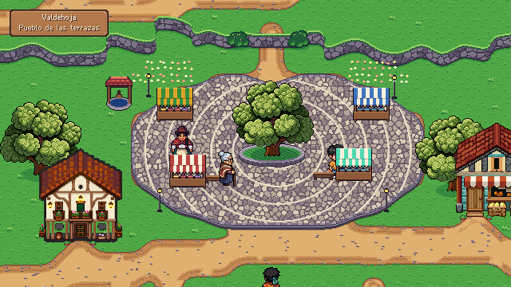
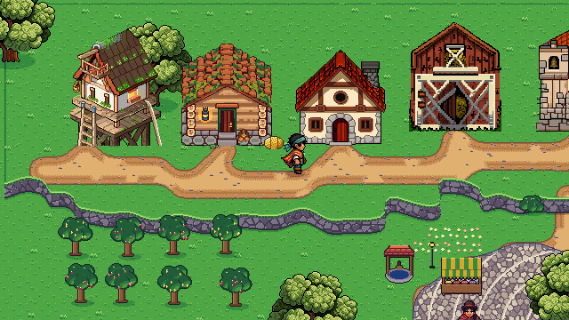


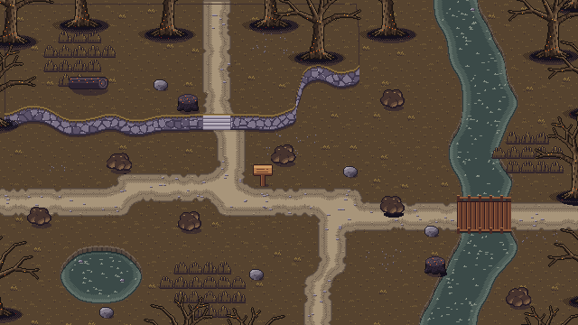
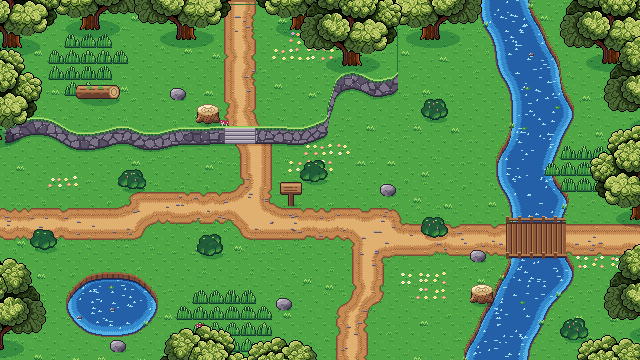
Personajes
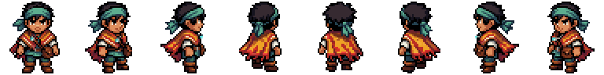
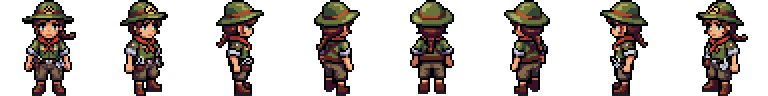
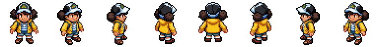
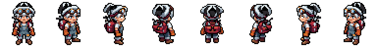
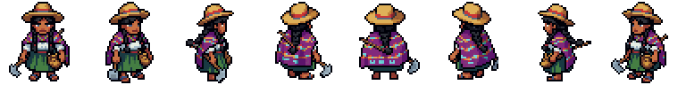
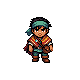
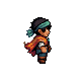
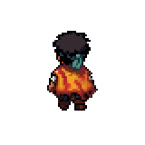
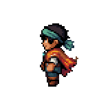
Monstruos
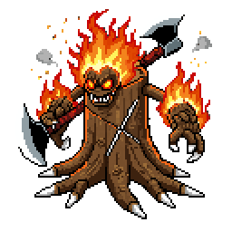
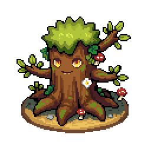
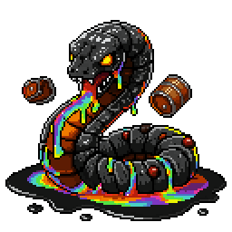
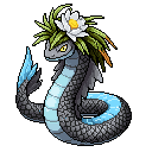
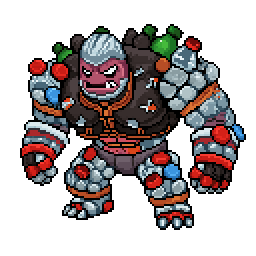
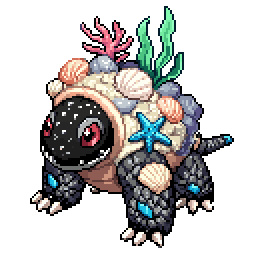
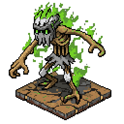
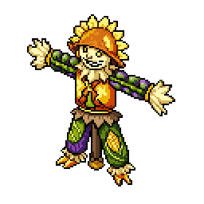
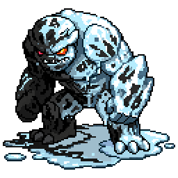
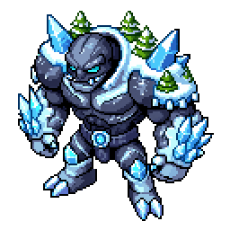
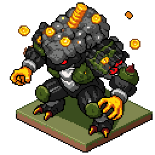
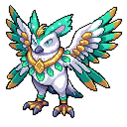
Mundo
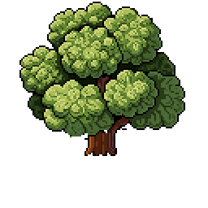
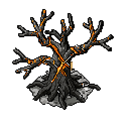
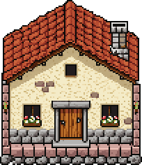
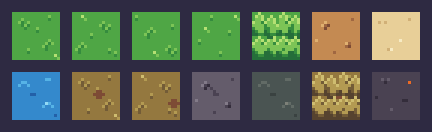
Marcos
Referencias y capturas
Renders aprobados de Tierra Viva (zonas enfermas y sanas, Valdehoja, interiores, título, créditos, combate) y capturas del motor.

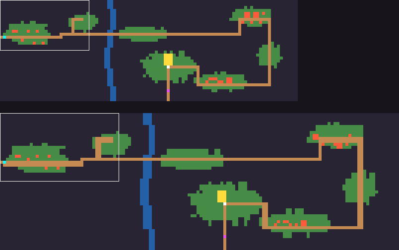

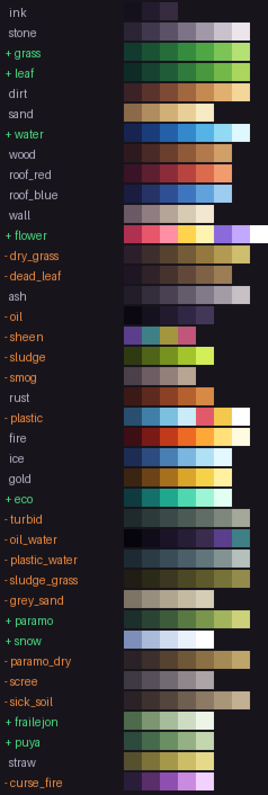

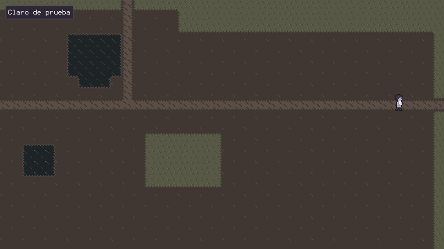

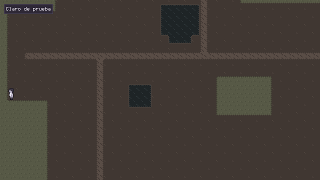

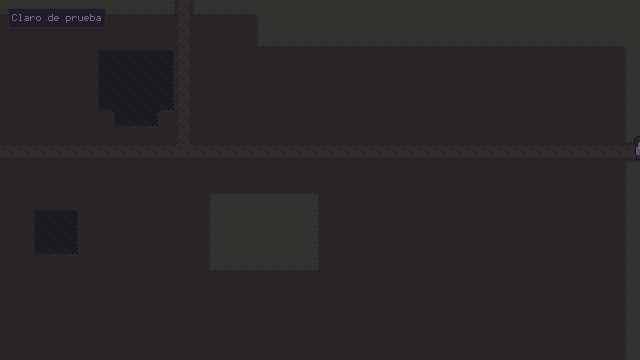

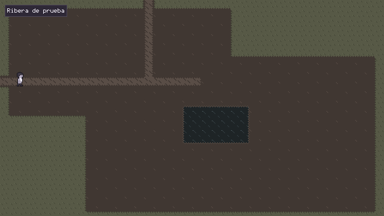

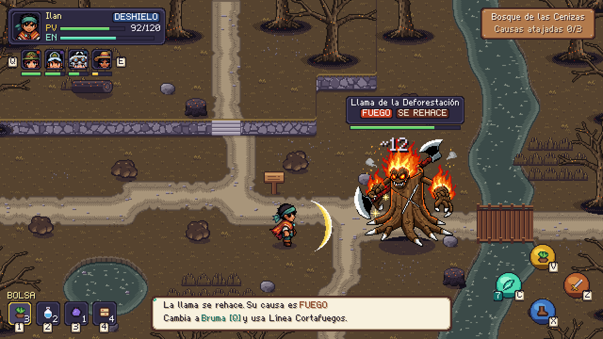

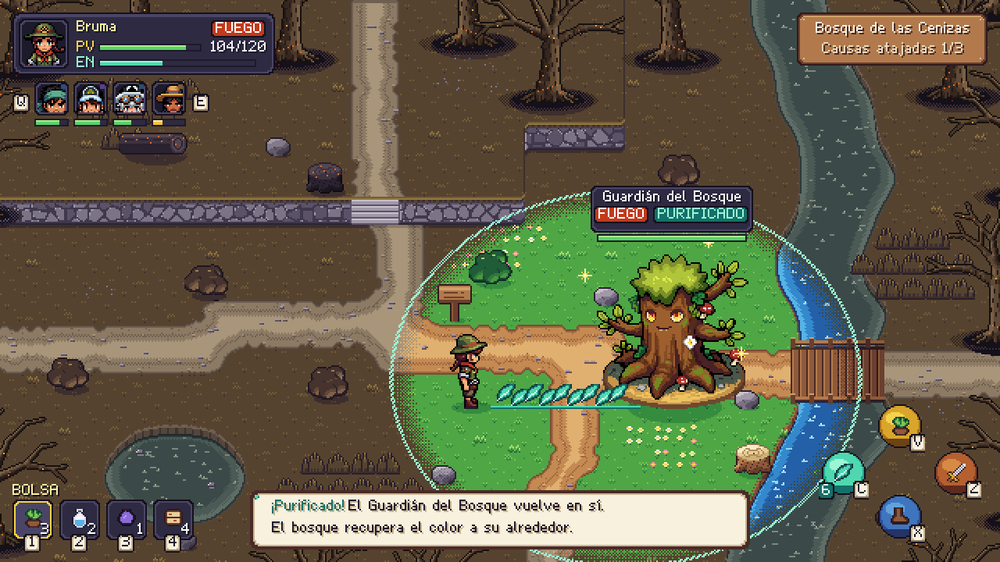

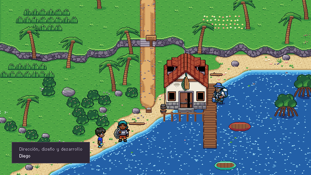

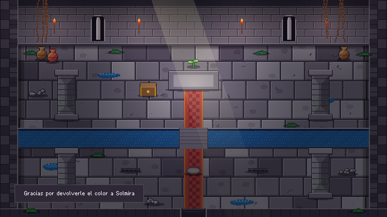

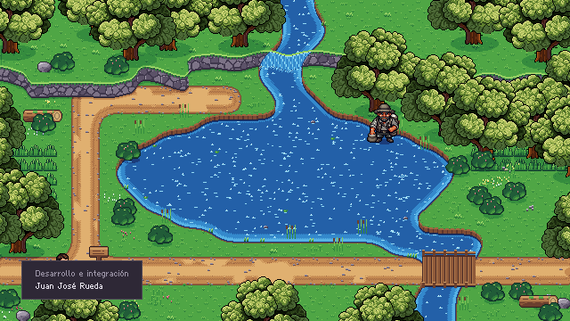

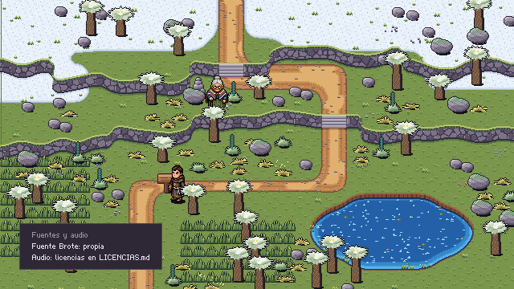

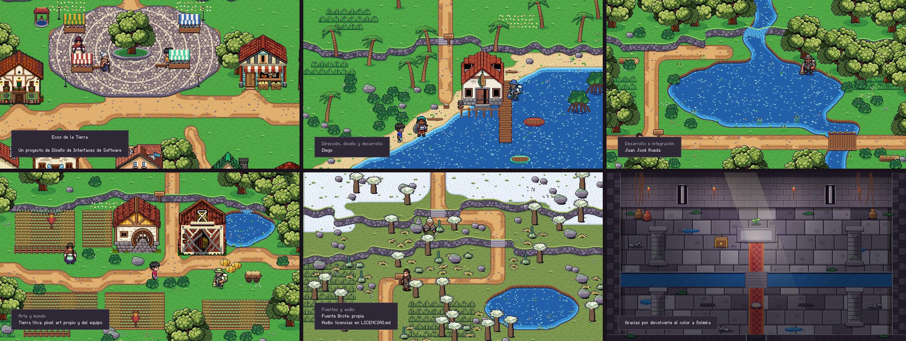

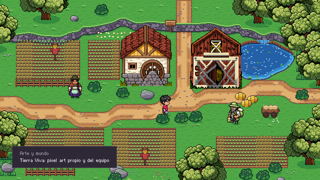

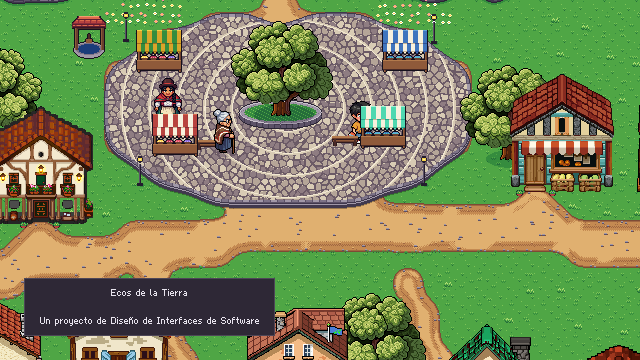

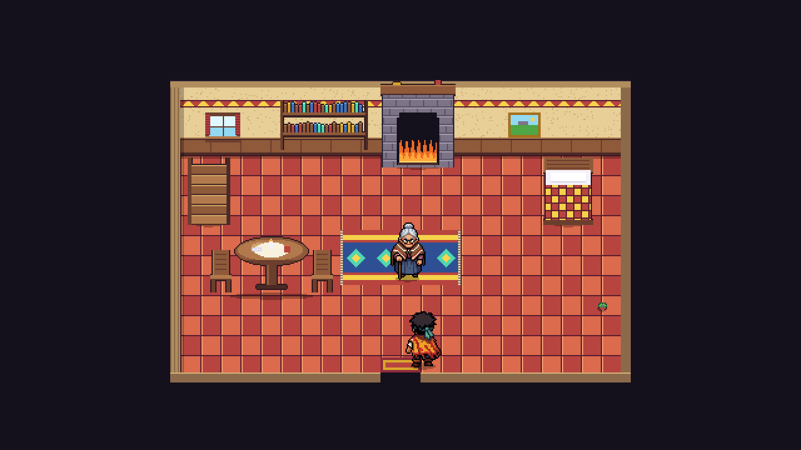

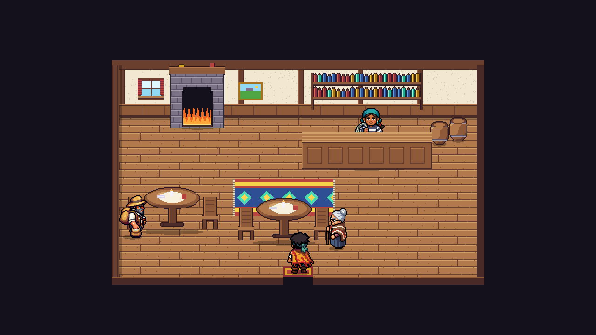


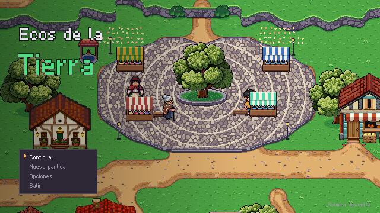

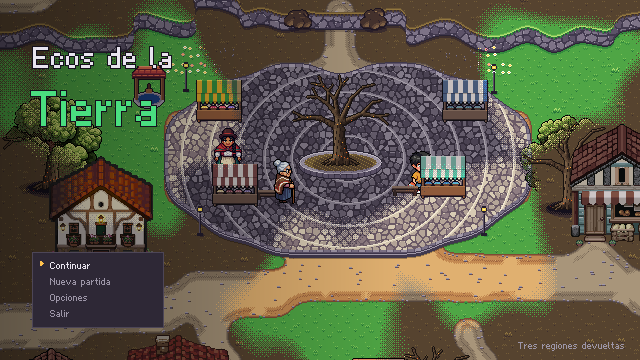

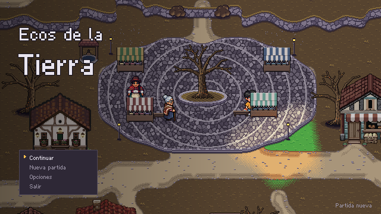

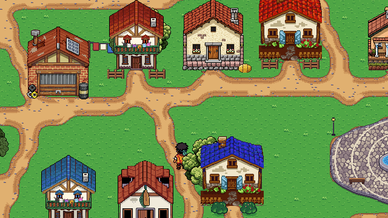